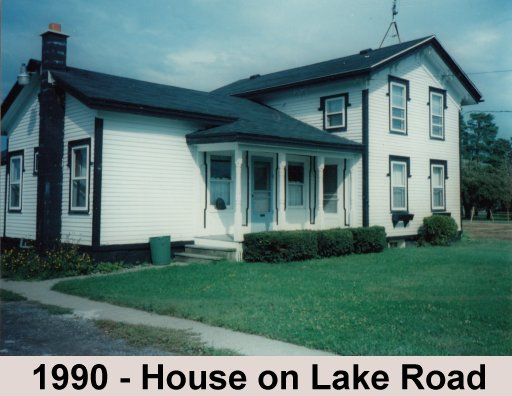

Warner House
 
Originally located at the intersection of Furnace and Lake Road, the Warner Farm House was the home of Alanson Warner and Catherine Albright. Alanson, the son of Andrew and Chloe Fairman Warner, moved from Worthington, Massachusetts to Ontario, New York in 1816.
The Warner Farm House was built in 1838. It was a simple two-room structure with a loft built from used materials. Around 1868, the two story addition was added as the family grew and gained wealth.
In July 1991, the house was donated to the Historical Society by Mr. and Mrs. Hollingsworth. It cost $20,000 to move the house to Heritage Square Museum.
Building Must-See: 2nd Floor